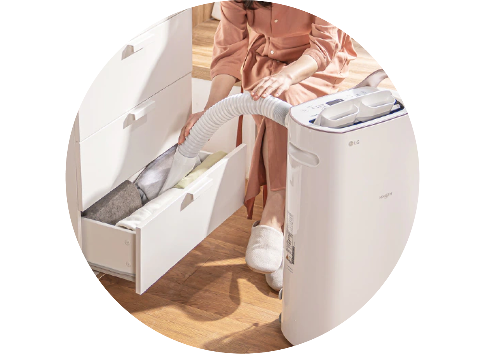

에어제습기


보다 더 스마트한 일상
LG ThinQ의 시작

보다 더 스마트한 일상, LG ThinQ
씽큐는 사람과 가전을 AI 기술로 연결하여 더 편리하고 놀라운 일상을 만드는 LG전자의 스마트 홈 플랫폼입니다.
* 본 콘텐츠는 ThinQ 앱의 콘텐츠입니다.
제습 기능도 여러 가지 상황에서 최적의 성능을 낼 수 있는 다양한 모드가 있어요
제습 운전 시에는 먼저 창문이나 방문 등을 닫아야 제대로 된 제습 효과를 볼 수 있겠죠?
스마트제습
사용자가 지정한 희망 습도에 맞춰 제습이 되는 모드예요. 희망 습도가 현재 습도보다 낮아야 압축기가 운전하며 희망 습도에 도달하게 되면 압축기의 동작이 멈추고 송풍 운전을 해요. 이후 희망 습도보다 현재 습도가 올라가게 되면 다시 제습 운전이 시작되죠. 기본 풍량은 강풍이며 풍량 및 희망 습도를 설정할 수 있어요.
-
스마트제습 사용 시 초기 기본 설정 및 권장 습도는 50%이니 참고하세요.

쾌속제습
빠르게 제습하고 싶을 때 사용하면 좋아요. 쾌속제습 설정 후 파워풍(디스플레이에 Po로 표시됨)으로 60분 동안 운전하며 그 이후에는 스마트제습 모드의 강풍으로 동작하죠. 쾌속제습으로 운전 시 습도 조절, 풍량 버튼을 선택하면 스마트제습으로 전환돼요.
-
스마트제습이나 저소음제습 운전 중 쾌속제습으로 전환할 경우 다른 운전 모드에서 선택한 희망 습도가 설정돼요.
저소음제습
취침 또는 공부를 할 때 사용하는 모드예요. 약풍으로 기본 설정되어 있으며 풍량 및 희망 습도를 설정할 수 있어요.
집중건조
젖었거나 눅눅해진 신발, 옷장 등에 집중적으로건조가 필요할 때 사용하는 모드예요. 연장호스와 신발건조키트 혹은 옷장건조키트가 필요한 모드죠.
집중건조 모드에서는 베인이 닫히고 연장 호스에서 나오는 바람을 통해 제습할 수 있어요.
풍량은 강풍으로만 운전되며 풍량 조절 및 습도 조절은 되지 않아요. 디스플레이에는 현재 습도가 표시돼요.
집중건조 모드 사용 방법
01
제습기 본체 뒷면에 있는 호스 커버를 반시계 방향으로 돌려서 열어주세요.
02
집중건조용 연장호스를 삽입 후 시계 방향으로 돌려 고정시켜 주세요.
03
연장호스에 신발건조키트나 옷장건조키트를 연결해 주세요.
* 신발건조키트와 옷장건조키트는 별매품입니다.
04
연장호스를 늘려서, 건조하고 싶은 방향으로 향하게 합니다.

의류건조
빨래를 건조할 때처럼 주변 습도 상관없이 연속하여 건조하고 싶을 때 사용해요.
풍량은 강풍으로 설정되어 있으며 습도 조절은 되지 않고 풍량 설정만 가능해요.
-
의류건조 시 베인이 상하로 운전함.
-
디스플레이에는 현재 습도가 표시됨.
-
세탁물을 건조할 경우 세탁물의 물방울이 제습기에 떨어지지 않도록 주의하세요.
제상운전
실내 기온이 낮아 열교환기에 서리가 맺히는 경우 자동으로 서리를 제거할 때 사용하는 모드예요.
-
디스플레이에 'dF'로 표시되면 제품 내부의 열교환기에 맺힌 서리를 제거하기 위해 자동으로 제상운전이 실행됩니다. 제상 운전 중에는 압축기가 동작하지 않아요.
물통비움
물통이 만수 되면 자동으로 동작이 정지되고 물통 비움 표시 램프가 빨간색으로 점등되며 알림음이 울려요. (1분 후 다시 한번 울림) 만수알림 즉시 제습 기능이 정지되고 잔여 응축수를 제거하기 위해 팬이 3분간 동작해요.
* 물통을 제품 동작 정지 후 바로 꺼내면 열 교환기에 남아 있는 물이 제품 내부에 떨어지는 경우가 있어요.-
배수 후 물통을 다시 끼우면 물통비움 표시 램프가 꺼지고 다시 운전을 시작해요.
다양한 상황에 활용할 수 있도록 다양한 모드가 제공되어 활용하기 편리하죠.


LG ThinQ
ThinQ 하나로 더 좋아지는 일상
일상을 더 편하고 스마트하게 만들어주는 씽큐 앱을 지금 바로 만나보세요.
- #건조기
- #스타일러
- #리프레쉬
- #패딩
- #패딩리프레쉬
- #리프레쉬코스
출처 및 고지사항
*건조기 패딩 리프레쉬 코스
- 제품 기능 및 기능 명은 모델별 상이
- 인터텍 시험 결과, 자사가 제시한 기준으로 스팀옵션 적 용, 건조행정시간 / 자연건조시간 비교시 경량 덕다운 기준 패딩 볼륨감 복원력 최대 31 % 더 회복
- 실사용 환경에서는 달라질 수 있습니다.
*스타일러 패딩관리 코스
- 제품 기능 및 기능 명은 모델별 상이
- 인터텍 시험 결과, 대표적인 패딩인 구스다운에 10kg 무게로 60분 동안 압력을 가한 후 스타일러의 패딩관리 코스를 사용하고 착용할 때와 스타일러를 사용하지 않고 동일한 시간(60분) 만큼 경과한 후 착용했을 때, 스타일러의 패딩 관리 코스를 사용한 패딩의 볼륨감이 최대 29%까지 높아짐
- 실사용 환경에서는 달라질 수 있습니다.
*참고 자료
- 패딩관리도 LG 건조기•스타일러면 '걱정 끝, LiVE LG [웹사이트]. (2019년 2월 26일) >